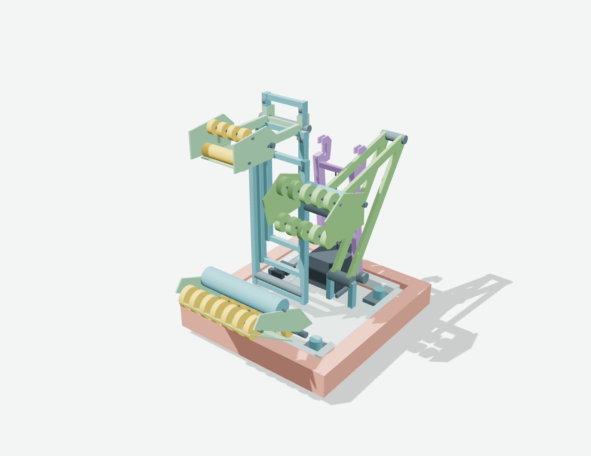
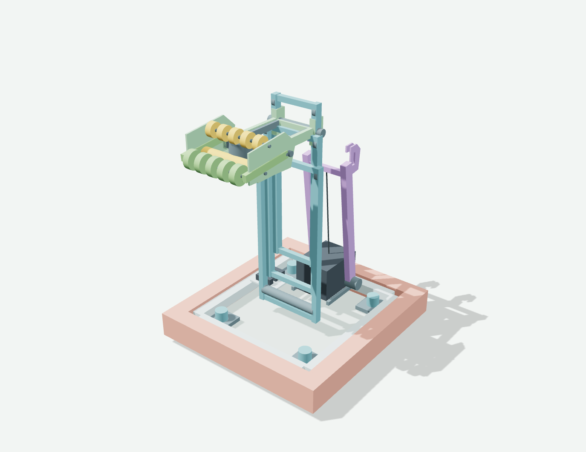
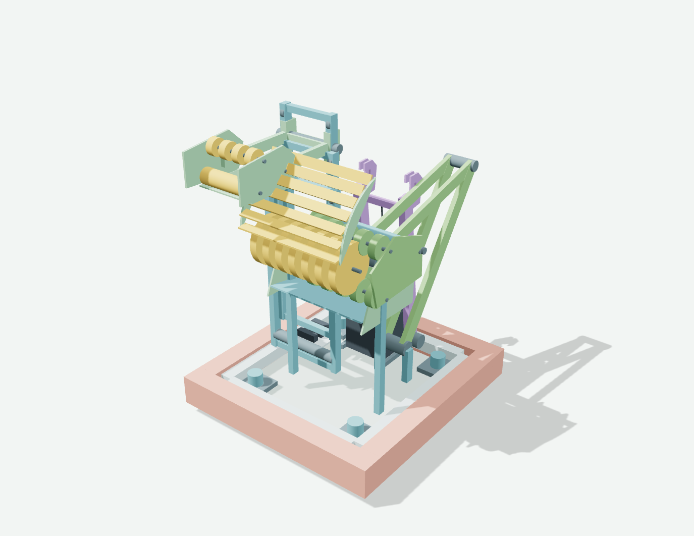
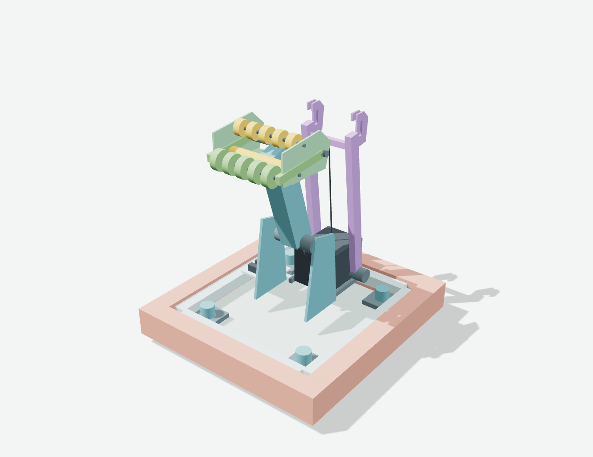
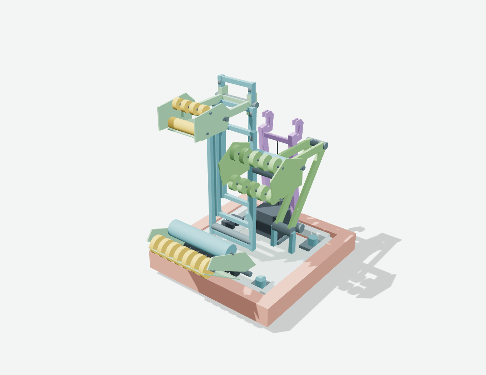
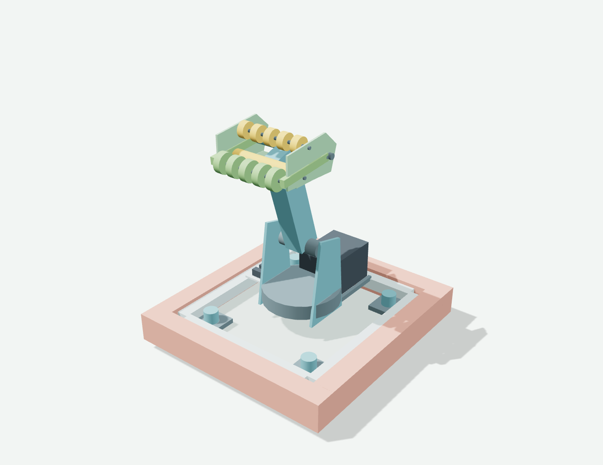
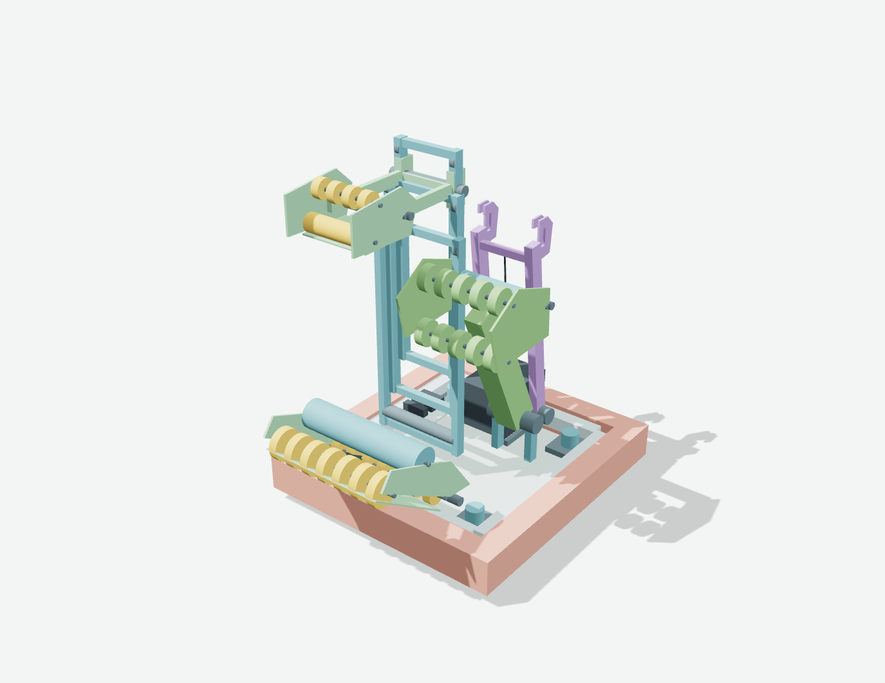
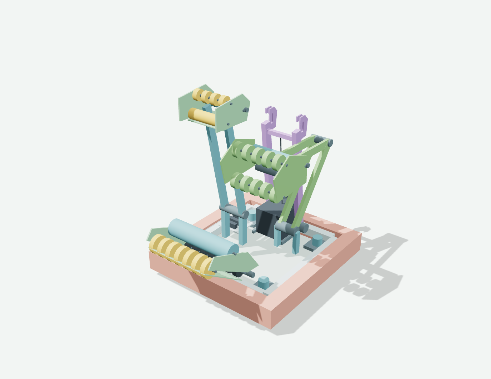
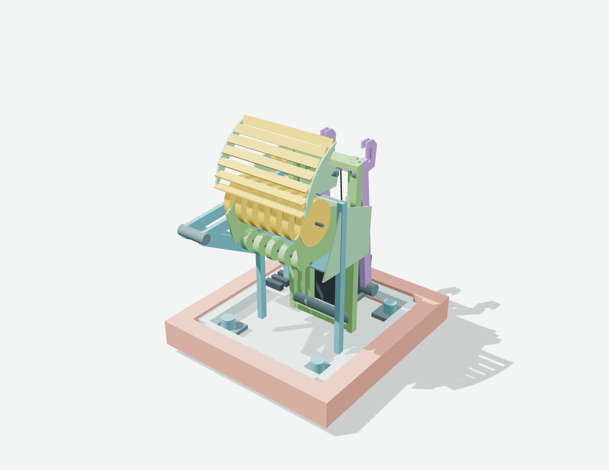
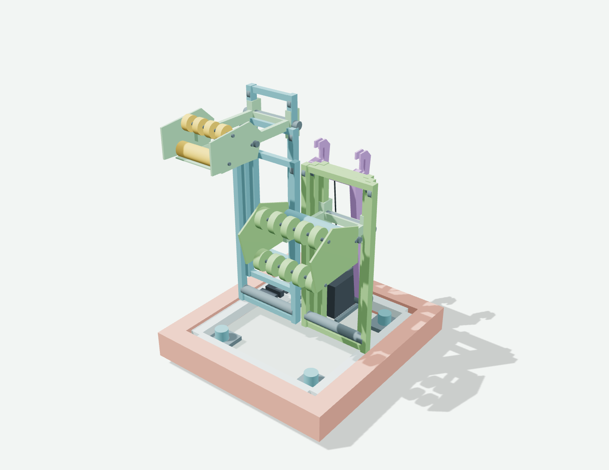

R01 / Split-Task Elevator
Coral L1/L2/L3/L4 · station + floor
Algae processor · deep endgame

R02 / One Carriage, Two Tools
Coral L1/L2/L3/L4 · station + floor
Algae processor + net · shallow endgame

R03 / Station Sprint + Algae Launcher
Coral L1/L2/L3/L4 · station
Algae processor + net · deep endgame

R04 / Telescopic Utility Arm
Coral L1/L2/L3/L4 · station + floor
Algae processor · deep endgame

R05 / Lift-and-Center Carrier
Coral L1/L2/L3/L4 · station + floor
Algae processor · shallow endgame

R06 / Turreted Reach
Coral L1/L2/L3/L4 · station + floor
Algae processor + net · park endgame

R07 / Low-Mast Partner
Coral L1/L2/L3 · station + floor
Algae processor · deep endgame

R08 / Wide-Mouth Cycle Partner
Coral L1/L2 · station + floor
Algae processor · shallow endgame

R09 / Algae-First Hybrid
Coral L1/L2/L3 · station + floor
Algae processor + net · deep endgame

R10 / Twin Independent Lifts
Coral L1/L2/L3/L4 · station + floor
Algae processor + net · shallow endgame